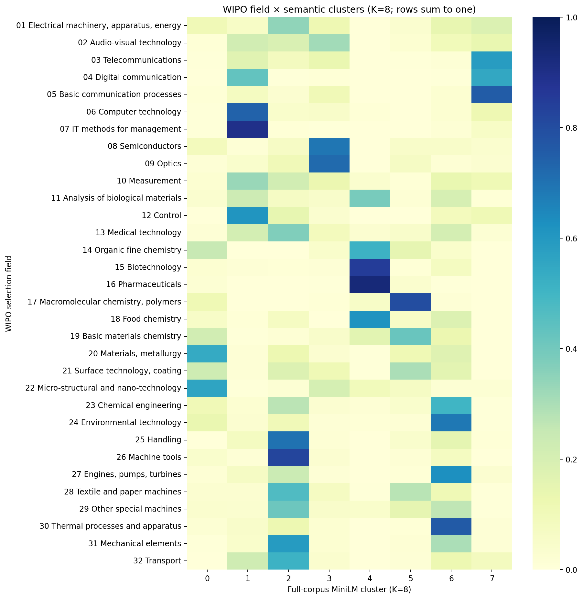
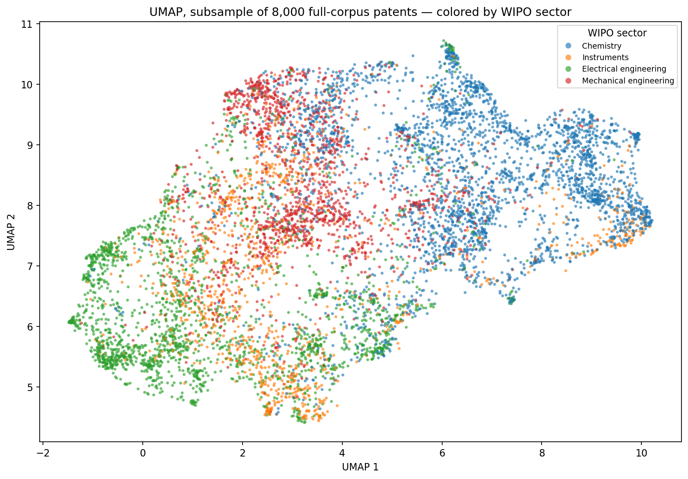

RESEARCH QUESTION · EXECUTIVE OVERVIEW
How heterogeneous is the patent sample?
A multi-representation assessment of technological differentiation, semantic structure, and clustering robustness in a WIPO-stratified patent corpus.
WORKING CONCLUSION
Yes, the sample shows measurable technological differentiation. The exact cluster boundaries are not unique.
Across nine representations, patents from the same WIPO selection field tend to be more semantically similar than patents from different fields within patent-office groups. Broad partitions can be stable, while finer partitions and patent assignments vary with the embedding and algorithm. This is evidence of technological signal—not proof of a single correct taxonomy, nor proof of greater heterogeneity than an older sample.
Evidence that supports the conclusion
Results already measured, not proposed tests
01All nine models show positive same-WIPO similarity advantage in office-matched comparisons.
02Full-corpus WIPO AMI is positive across every representation at K=8 and K=16.
03Ordinary and spherical K-Means recover similar WIPO correspondence, although assignments differ.
04The 6,400-patent pilot and 63,968-patent corpus show broadly consistent WIPO AMI.
What this does not establish
Important limits for the meeting
01The sample is not representative of global patent frequencies; it was deliberately stratified by WIPO field.
02Clusters are not fully validated expert technological categories.
03A higher silhouette across different model spaces does not necessarily indicate a better representation.
04No direct matched old-versus-new sampling comparison is included.
Full-corpus WIPO correspondence
Adjusted Mutual Information by embedding and cluster granularity
WIPO AMI is an external diagnostic, not classification accuracy. More clusters generally increase correspondence.
Matched technological signal
Same-field vs different-field cosine similarity, within office groups
Positive differences across all representations. Magnitudes are model-space dependent and should not be ranked without caution.
DATASET DESIGN · NOTEBOOKS 03–05 & 12
What is the sample?
The corpus is designed to span technological domains—not to reproduce the global prevalence of patents by office, year, or sector.
WIPO technology sectors
Designed field-level sample, before publication deduplication
Sector counts are field-selection rows. They are not publication-level sector shares after deduplication.
Patent office concentration
Publication-level counts from initial exploratory analysis
CN: 43,389/63,968 (67.8%). Remaining offices collectively account for 32.2%. Office can correlate with document style and technology.
Original MiniLM full-corpus reference figures
Precomputed in Notebook 09. These are not visualizations of Mauro’s other eight embedding spaces.


Text and classification considerations
Three placeholder abstracts
Flagged and preserved in embedding metadata; not all source abstracts are equally informative.
Non-exclusive technology mappings
Patents may match multiple WIPO IPC–technology rules. Benchmark AMI uses one deterministic selection field.
Long-text treatment differs
Original MiniLM used overlapping windows for 17,937 documents; Mauro's eight models used native context limits with no chunking.
Coverage: 2021–2026
Patent publications from January 2021 through September 2026 according to the dataset README.
FULL CORPUS · NOTEBOOK 13
Nine representations, one common dataset
All comparisons use the same 63,968 publication IDs. Scores answer different questions and are deliberately presented together rather than collapsed into one winner.
WIPO AMI: pilot versus full corpus
Full experiment repeated with 3 seeds and 10 K-Means initializations per fit
Full-corpus benchmark table
All nine representations, sorted by the selected metric
| Representation | WIPO AMI | Silhouette | Seed ARI | Office AMI | Largest cluster |
|---|
Silhouette values across different embedding geometries are descriptive, not a universal model ranking.
Cross-model agreement on the full corpus
Adjusted Rand Index for pairs of embedding representations; values change with K
ARI compares partitions of the same publications, independent of arbitrary cluster numbers. Less agreement at K=16 suggests a less unique fine-grained partition.
What changed from MiniLM?
The patent-adapted SBERT representation has much higher cosine silhouette, but its embedding geometry may partly explain the difference. EmbeddingGemma and Qwen3-0.6B show strong WIPO correspondence. The larger Qwen3-4B model shows relatively high office association.
Interpretation: domain adaptation, task prompting, context length, and learned geometry all matter. The objective is to check robustness, not to nominate one architecture as universally best.
Model context
| Model | Dim | Max tokens | Truncated |
|---|
For original MiniLM, “17,937 multiple windows” is not truncation. All new embeddings were saved L2-normalized as float16 and clustered in float32.
PILOT COHORT · NOTEBOOK 14
Does technological structure survive methodological changes?
The 6,400-patent pilot compares multiple K values, ordinary and spherical K-Means, HDBSCAN, and office-controlled similarity. All nine representations remain included.
Granularity trade-off
Mean WIPO AMI and silhouette over nine representations, ordinary K-Means
Increasing K makes the WIPO partition more granular while reducing geometric separation; no “correct” K follows automatically.
Initialization stability
Mean seed ARI across models for each K (pilot; two seeds)
Broad partitions tend to be more reproducible. Finer divisions are more sensitive to initial conditions.
K-Means versus spherical K-Means
Mean WIPO AMI across nine embedding spaces
Similar WIPO information is recovered, but individual partition assignments can differ. Spherical used fewer restarts than ordinary K-Means.
HDBSCAN coverage
PCA50 · min_cluster_size=75 · min_samples=10
Coverage is the fraction not labeled as noise. Assigned-only silhouette is not comparable to K-Means on all observations.
Similarity contrast within office groups
Same WIPO-field patent versus different WIPO-field patent, paired at fixed office group
Why it matters
All nine representations have positive mean contrasts, suggesting technological signal beyond office membership. This test still depends on WIPO selection labels and does not eliminate every source of confounding.
CN-C2 exclusion sensitivity
10,973CN patents removed from original C2
−0.0039Change in cosine silhouette
+0.0034Change in WIPO AMI
Removing the Chinese-heavy mechanical subgroup did not improve cluster separation. This does not establish that office effects are absent, only that this targeted exclusion did not help under that experiment.
Opening versus closing abstracts
On 1,599 long patents, opening fragments corresponded more closely with WIPO fields than closing fragments; full text performed best geometrically. The original MiniLM already used chunk averaging for long texts.
PILOT CLUSTER PROFILES · NOTEBOOK 13B
What is inside the discovered clusters?
Composition is a diagnostic of semantic grouping and possible confounding. These pilot profiles should not be mistaken for full-corpus cluster membership.
Chinese publication share by cluster
Dashed reference: CN prevalence in pilot (~67.7%). Strong office concentration may reflect document practices or real technological specialization.
Effective WIPO fields by cluster
Exp(Shannon entropy) of WIPO-field proportions. A highly mixed cluster is not automatically invalid: technologies can cross official classifications.
Cluster-by-cluster summary
| Cluster | Patents | Share | Leading WIPO field | Top-field share | Effective WIPO | CN share |
|---|
How to read the result
Look for groups with both high office concentration and very broad WIPO composition. These are candidates for qualitative checks of style/translation artifacts. Cluster numbers are arbitrary and cannot be matched numerically across models.
CLICKABLE PATENT EXPLORATION · MAPS & REVIEW CANDIDATES
From geometric clusters to actual inventions
Explore precomputed patent maps and selected central, random, peripheral and boundary examples. Hover over a point, then click to inspect its title and abstract.
UMAP projection of 2,400 common pilot patents
Independent projection per model. Color options are inside each imported map.
Patent details
Select a point or a card to inspect a real publication
Choose a patent from the interactive diagram or the example cards above. For UMAP maps, the click-to-read panel appears immediately beneath the map.
Map availability
The supplied package contains two actual UMAP HTML maps. Notebook 14 already generated the other seven on Google Drive: import their HTML files using the included Colab helper to activate all nine. All nine models already have interactive centroid-distance diagnostics and patent cards in this dashboard.
READY FOR THE MEETING · PRESENTATION GUIDE
How to explain heterogeneity
A simple evidence-based narrative, deliberately avoiding an unsupported claim that there is a universally best model.
Explain the sample design
64,000 field-level selections across 32 WIPO fields, deduplicated to 63,968 publications. Technological field balance was imposed by the design; patent-office prevalence was not.
Introduce the nine semantic perspectives
Mauro produced eight new embedding matrices, all aligned to the same publication IDs; original chunked MiniLM is the baseline. Their geometries, context limits and prompts differ.
Show that technological information is measurable
Across all nine models, within office groups, same-WIPO pairs are more similar on average than different-WIPO pairs. This is the clearest office-controlled check of technological signal.
Explain that clusters depend on granularity
At larger K, WIPO AMI generally increases, while silhouette and stability often decrease. Spherical K-Means yields similar WIPO alignment; HDBSCAN leaves much of the sample unassigned under tested settings.
Click a few central and peripheral patents
Pick examples, show the title/abstract, and discuss whether broad technological groupings remain interpretable at cluster boundaries. These are illustrations, not a scored human-validation study.
30-SECOND SCIENTIFIC CONCLUSION
“The sample contains measurable technological differentiation across nine embedding representations. Broad groups are comparatively robust, but finer semantic boundaries depend on the model and clustering method. We therefore describe a heterogeneous technological corpus with overlapping domains, not a unique natural partition. The sample remains WIPO-stratified and office-imbalanced, and we have not yet shown it is more heterogeneous than the previous sampling strategy.”
27 illustrative patents · 30-minute exercise
Two central and one peripheral patent from one cluster for each representation. Use these for presentation examples only.
REPRODUCIBILITY · SCIENTIFIC CAUTIONS
Methods, caveats and source materials
Numbers are drawn from the uploaded executed notebooks and exported CSVs. Scientific interpretations are identified separately from measured statistics.
Data provenance
Source embeddings
istat-ai/wipo32-patent-embeddings ↗
Revision e570ab0121c6dff0e61b05b64dd7ee21b98b78b7
Full-corpus reference
Notebook 13 full benchmark: 63,968 patents; K=8/16; seeds 42,43,44; n_init=10; cosine silhouette fixed 1,200-patent sample.
Algorithm robustness
Notebook 14 on 6,400 patents, nine representations, multiple K; ordinary/spherical K-Means and PCA50+HDBSCAN.
Examples and composition
Notebook 13b uses pilot data. Full-corpus review examples are available only for K=8 in the provided export.
Interpretation guardrails
What the metrics mean
WIPO AMI
Chance-adjusted information shared between a cluster assignment and a deterministic one-field WIPO reference. Not accuracy or semantic ground truth.
Cosine silhouette
Relative separation versus compactness within a given embedding geometry. Do not rank dissimilar embedding spaces using this score alone.
Seed ARI
Partition agreement across random initializations, invariant to cluster numbering. A stable grouping can still reflect nuisance factors.
Cross-model ARI
How similarly different embeddings group the same patents. Low values show representation dependence, not necessarily lack of technological differentiation.
HDBSCAN coverage
Percentage assigned to non-noise groups. Under the tested parameters, most patents were unassigned; this is not proof of homogeneity.
Effective WIPO fields
Entropy-based effective count of WIPO selection fields represented within each cluster; not the number of identified “true” sub-technologies.
Raw outputs included with this dashboard
For transparent review, the ZIP includes key CSVs and the exact embedding-manifest JSON in downloads/. The full Hugging Face matrices and full 63,968-row metadata are not bundled.
Relevant literature and technical references
Ghosh et al. — PaECTER, patent embeddings informed by citation relationships ↗Ascione & Sterzi — Patent text embeddings and domain adaptation ↗PAT SPECTER model information ↗Clustering algorithms and validation documentation ↗